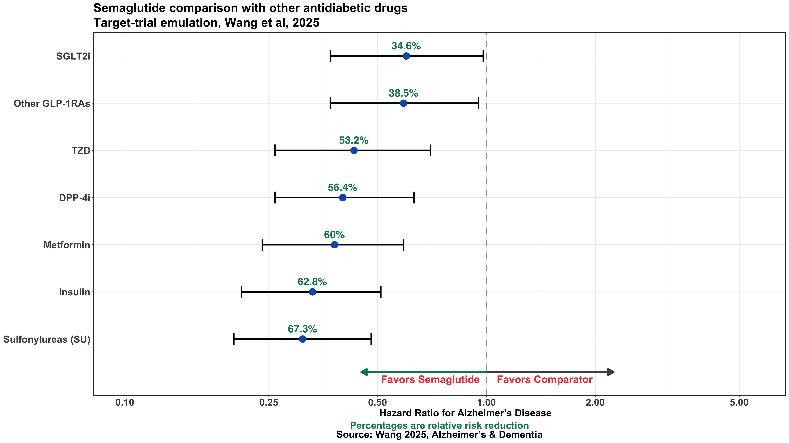

This analysis compares the risk of Alzheimer’s disease across antidiabetic treatments in individuals with type 2 diabetes. The visualization presents hazard ratios and relative risk reductions for semaglutide versus other therapies, accompanied by a brief interpretive summary of the findings.
Author
Prince Agyapong
Published
July 4, 2025
Visualization

Semaglutide seems to be linked to a lower risk of being diagnosed with Alzheimer’s disease compared to several other diabetes medications. This was seen in people with type 2 diabetes, a group already known to have a higher risk of Alzheimer’s. The benefit wasn’t just in comparison to insulin, which is often associated with cognitive decline, but also when semaglutide was compared to commonly used non-insulin drugs like metformin, SGLT2 inhibitors, and even other GLP-1 receptor agonists.
The difference was especially large when comparing semaglutide to insulin and sulfonylureas, with over 60% relative risk reduction in Alzheimer’s diagnosis. That might reflect the harmful effects of those drugs on the brain, especially insulin, which can cause low blood sugar episodes. But the fact that semaglutide also outperformed metformin, a drug sometimes thought to have cognitive benefits, makes the case even stronger.
What stands out is that semaglutide did better than older GLP-1RAs too. That suggests the effect isn’t just about the drug class, but something specific to semaglutide—possibly how it works in the brain, its stronger overall effects, or how long it stays active in the body.
Altogether, this real-world evidence points to semaglutide offering more than just blood sugar control. It may also help reduce the risk of Alzheimer and dementia in people with type 2 diabetes. It’s not proof of prevention, but it’s a strong signal that deserves more research in future clinical trials.
Steps to Make Plot
Load Packages
Show code
suppressPackageStartupMessages({if (!require("pacman")) install.packages("pacman") pacman::p_load( tidyverse, ggtext, # Improved text rendering support for 'ggplot2' showtext, # Use custom fonts more easily in R graphics janitor, # Simple tools for examining and cleaning dirty data scales, # Scale functions for visualization glue, # Interpreted string literals patchwork, # Combine multiple plots into a single layout ggpubr, # Publication-ready 'ggplot2' visualizations grid )})